Foreign Exchange Interventions
Theory and Practice
Romain Lafarguette, Ph.D.
Amine Raboun, Ph.D.
Quants & IMF External Experts
romainlafarguette.github.io/
amineraboun.github.io/
Singapore Training Institute, 17 April 2023
This training material is the property of the IMF, any reuse requires IMF permission
Lafarguette & Raboun (IMF STX)
FXI Theory & Practice
STI, 17 April 2023
1 / 79
Resources
A textbook presentation of foreing exchange interventions can be
found in Sarno and Taylor (2012):
The Economics of Exchange Rate
The BIS publishes interesting papers reflecting BIS surveys
conducted with central banks. For instance (2019):
FX Interventions: Goals, Strategies and Tactics
A recent and quite comprehensive database on FX Interventions
(2021), compiled by IMF colleagues:
Foreign Exchange Interventions, A Dataset
I am borrowing materials from Kathryn Dominguez, professor at
U-Michigan, specialized on FX interventions:
Kathryn Dominguez Personal Webpage
Popper (2022) provides a very complete literature review on FX
Interventions
Link, Popper 2022
Lafarguette & Raboun (IMF STX)
FXI Theory & Practice
STI, 17 April 2023
2 / 79
1
Conceptual Framework
Goals and Intermediate Objectives
Monetary Frameworks
Types of FX Interventions
Transmission Channels
2
Implementation
Instruments
Rule vs. Discretion
FXI Size
Communication
Intervention Effectiveness
FX Interventions and Exchange Rate Management
3
Practical Cases
Mexico
Brazil
Colombia
Lafarguette & Raboun (IMF STX)
FXI Theory & Practice
STI, 17 April 2023
3 / 79
Definition of FX interventions
FX Interventions: Definition
Any official sale or purchase of foreign assets against domestic assets in
the foreign exchange market
FXI are usually carried-out by the central bank, but can
sometimes be under the responsibility of the Ministry of Finance
(eg.
Link )
To simplify, in this presentation, we assume that domestic assets
are in the domestic currency, while foreign assets are denominated
in the foreign currency
Lafarguette & Raboun (IMF STX)
FXI Theory & Practice
STI, 17 April 2023
4 / 79
Goals and Intermediate Objectives
Goals: ultimate purpose of the FX intervention. Consistent with
the monetary framework of the central bank
For instance, preserving financial stability
Intermediate objectives: reach the goals via the operational
framework of the central bank
For instance, mitigating FX daily volatility
Lafarguette & Raboun (IMF STX)
FXI Theory & Practice
STI, 17 April 2023
5 / 79
FXI Main Goals for Central Banks
Price stability
When large exchange rate movements pass-through inflation,
generating temporary shocks
Financial stability
Calm "disorderly market conditions"
Smooth capital flows and credit spillovers (impact on carry trade
and excess returns)
Alleviate FX funding shortage
Reduce FX speculation
Terms of trade
Support external competitiveness (especially in USD weakening
phases)
Smooth commodity prices
Building/managing FX reserves
In principle, without market impact
Support fellow central banks in their exchange rate operations
Lafarguette & Raboun (IMF STX)
FXI Theory & Practice
STI, 17 April 2023
6 / 79
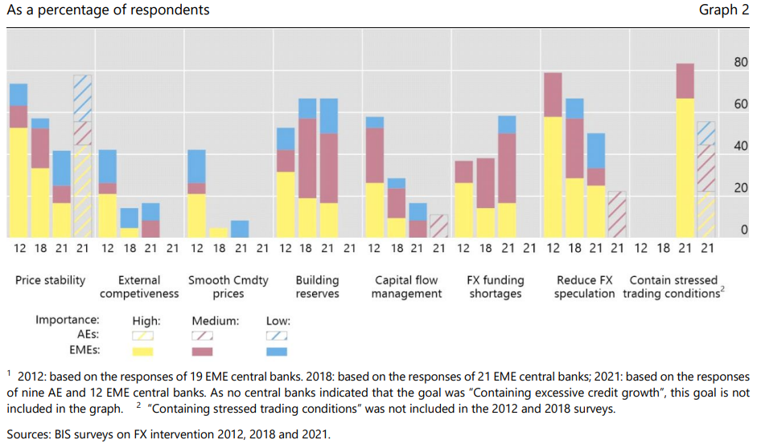
Survey: FXI Main Goals for Central Banks
Source: BIS 2021
Link
Lafarguette & Raboun (IMF STX)
FXI Theory & Practice
STI, 17 April 2023
7 / 79
FXI Intermediate Objectives
Limit exchange rate volatility
Even if the main goal is price stability, limiting FX volatility is
important. Affect the price-setting behavior of firms; cause average
imported inflation to rise.
Can derail the transmission of monetary policy
Provide liquidity to think market
Influence the level of exchange rate
Smooth the trend path of exchange rate
Limit pressure caused by international investors
Lafarguette & Raboun (IMF STX)
FXI Theory & Practice
STI, 17 April 2023
8 / 79
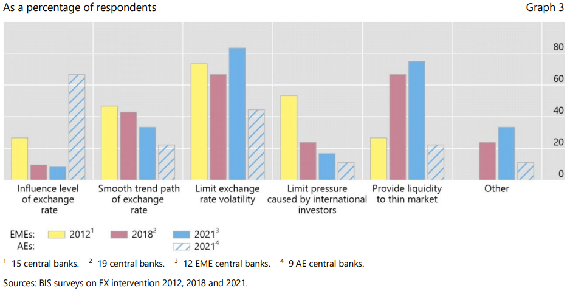
Survey: FXI Intermediate Objectives for Central Banks
Source: BIS 2021
Link
Lafarguette & Raboun (IMF STX)
FXI Theory & Practice
STI, 17 April 2023
9 / 79
The Negative Impacts of FX Interventions
Moral hazard and encouragement of greater-risk taking
Negative effects on market development (e.g. hampering the
development of derivative markets by removing the need for
currency hedge)
which in turn increases the need for future FXI in the future...
Potential difficulties in balancing the orderly functioning of
local FX markets while maintaining openness to foreign
investors
Possible inconsistencies between monetary policy and FXI, with
complex interactions difficult to understand and communicate,
which overall increase policy uncertainty
Note that the risk-based intervention rule we will present during
this course is solving some of these issues
Lafarguette & Raboun (IMF STX)
FXI Theory & Practice
STI, 17 April 2023
10 / 79
FXI Interventions Should be Consistent with the
Monetary Framework
Inflation targeters and monetary base targeters should
parsimoniously use FX interventions for:
Financial stability
For instance, when domestic agents face severe currency mismatches
on their balance sheet
To ensure that the monetary objectives are reached
For instance, when the pass-through of large - and temporary -
exchange rate movements threaten
Hard-peg and currency board regimes usually conduct FX
operations via FX windows, at fixed exchange rate (the monetary
policy objectives)
Crawling- and soft-peg conduct infrequent FXI when the
exchange rate deviates outside of the central bank tolerancce
Often, conflict between de-jure and de-facto monetary objectives
Lafarguette & Raboun (IMF STX)
FXI Theory & Practice
STI, 17 April 2023
11 / 79
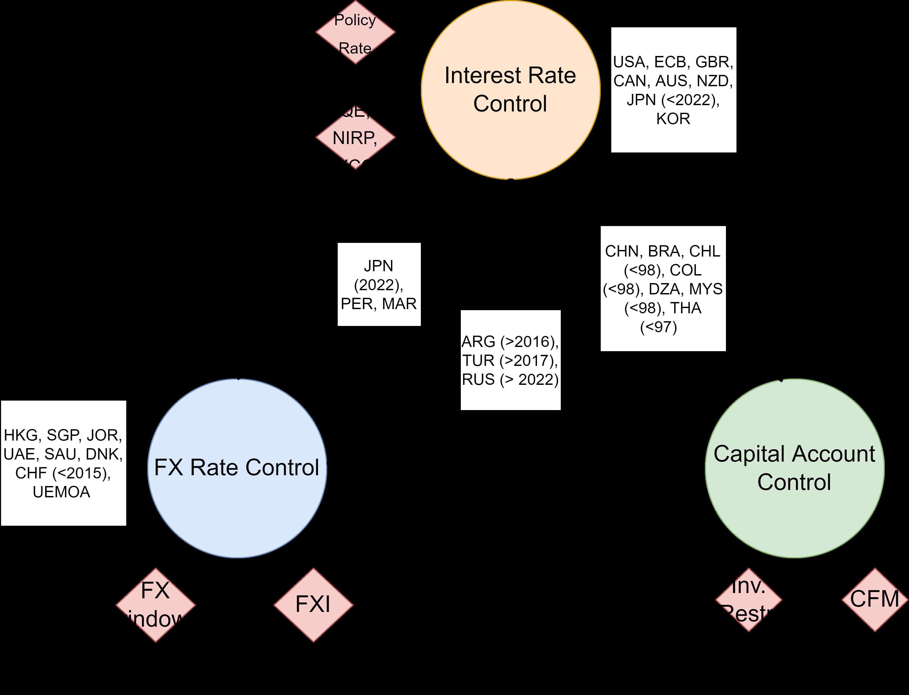
Monetary Frameworks and Trilemma
Lafarguette & Raboun (IMF STX)
FXI Theory & Practice
STI, 17 April 2023
12 / 79
Types of FX Interventions
There are two types of foreign exchange interventions:
1
Non-sterilized operations
Buy and sell foreign assets against banks’ reserves at the central
bank
Increase or decrease the monetary base, and therefore impact the
monetary stance
2
Sterilized operations
Buy and sell foreign assets against banks’ reserves at the central
bank
Sterilize the intervention by either (i) selling or purchasing
home-currency assets or (ii) issuance of sterilization instruments
No impact on the monetary stance
Lafarguette & Raboun (IMF STX)
FXI Theory & Practice
STI, 17 April 2023
13 / 79
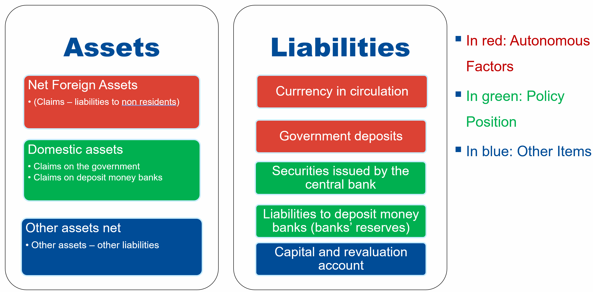
Central Bank Balance Sheet
Lafarguette & Raboun (IMF STX)
FXI Theory & Practice
STI, 17 April 2023
14 / 79
Can All Countries Sterilize?
In practice, it may be difficult to offset fully the effect of FX
interventions
Countries with under-developed financial markets might not offer
enough assets for the central bank to sterilize
Second-round effects of central bank sterilization can dampen
For instance: after FXI (buying), sterilization via domestic assets
sale, attracts capital inflows, the CB will have to purchase FX
further, etc.
One potential solution: using FX derivatives
For instance, East-Asian central banks often use FX swaps to
sterilize
Purchasing FX on the spot
Swap by selling FX spot, buying FX in the future
Lafarguette & Raboun (IMF STX)
FXI Theory & Practice
STI, 17 April 2023
15 / 79
The Costs of Sterilization
Fiscal cost
Depends on the interest rate differential between domestic and
foreign assets
Balance the cost of the conduct of monetary policy with the
monetary policy mandate. Important to be consistent, even if it
implies costs for the central bank
Some central banks try to pass the costs to the banking sector,
either via the required reserves (FX or domestic, high ratio with
below-market remuneration) or forced-holdings of sterilization assets
This is a form of financial repression, and is not advised...
Valuation risk
If foreign reserves grow too much, they expose the central bank to
foreign exchange risk
If the foreign currency depreciates, the valuation losses on the FX
reserves will reduce the central bank equity
Lafarguette & Raboun (IMF STX)
FXI Theory & Practice
STI, 17 April 2023
16 / 79
Transmission Channels
FX interventions influence the exchange rate through two main
channels:
1
Signaling channel
Signaling future monetary policy stance
Signaling future exchange rate and interventions
2
Portfolio and risk rebalancing channel
Lafarguette & Raboun (IMF STX)
FXI Theory & Practice
STI, 17 April 2023
17 / 79
Signaling Channel
FX Interventions provide investors with "information" about:
The central bank view of the appropriate exchange rate
The signal of future policy intentions
As long as the central bank is credible, the signal can influence
the exchange rate
Lafarguette & Raboun (IMF STX)
FXI Theory & Practice
STI, 17 April 2023
18 / 79
Signaling and Transparency
If interventions convey information, why do some central banks
continue to keep them secret, even ex-post?
Threat for the credibility if the intervention is unsuccessful?
"Wants to keep control", tradition of secrecy
Political repercussions?
Rather than conducting FX interventions, why not announcing
direct monetary policy changes (e.g. a change in the policy rate)?
Mussa (1981): "FX interventions may be more credible because it
forces the central bank to put money where its mouth is"
In small economies with limited transmission of monetary policy,
the exchange rate channel is often the most efficient one
Lafarguette & Raboun (IMF STX)
FXI Theory & Practice
STI, 17 April 2023
19 / 79
The Portfolio Rebalancing Channel
Key assumptions of the portfolio rebalancing channel for sterilized
FX interventions:
Investors diversify their holdings domestic/foreign as a function
of expected returns and variance of returns
Foreign and domestic assets are imperfect substitutes: the
uncovered interest parity doesn’t hold
Theory: FXI -> change the relative supply of foreign versus
domestic assets -> change expected returns and FX rate
For example, after a sterilized FXI selling-side, increase the supply
of foreign assets, depreciating the foreign currency
Sterilized FX interventions also alter the risk characteristics of
foreign/domestic assets
Domestic investors are exposed to FX risk when holding foreign
assets
Sterilized interventions influence the equilibrium exchange rate via
a change in the risk premia
Lafarguette & Raboun (IMF STX)
FXI Theory & Practice
STI, 17 April 2023
20 / 79
Summary of the Main Transmission Channels
Signaling
Portfolio Rebalancing
Assumption
The central bank is
Assets are imperfect
credible
substitutes
Channel
Market Expectations
Relative supply and
returns, risk premium
Lafarguette & Raboun (IMF STX)
FXI Theory & Practice
STI, 17 April 2023
21 / 79
1
Conceptual Framework
Goals and Intermediate Objectives
Monetary Frameworks
Types of FX Interventions
Transmission Channels
2
Implementation
Instruments
Rule vs. Discretion
FXI Size
Communication
Intervention Effectiveness
FX Interventions and Exchange Rate Management
3
Practical Cases
Mexico
Brazil
Colombia
Lafarguette & Raboun (IMF STX)
FXI Theory & Practice
STI, 17 April 2023
22 / 79
Challenges
Countries, and in particular EMEs, face implementations issues when
framing their FX interventions strategy
Does intervention affect the credibility of inflation-targeting?
Should intervention be discretionary or follow rules?
If rules, what kind of rules?
What should guide the decision between spot vs derivatives
instruments?
Should CBs provide targeted FX provision to specific banks or
engage in open-market FX interventions?
Under what conditions is it appropriate to deploy intervention and
capital controls jointly?
Lafarguette & Raboun (IMF STX)
FXI Theory & Practice
STI, 17 April 2023
23 / 79
Different Approaches to Intervention
Brazil: discretionary operations, reported one week after since
2008.
In 2013-2015, daily sales of NDF contracts
Chile: pre-announced daily purchases of USD 50m with a
discretionary intra-day timing
Colombia: 3-minute Dutch auction (descending price) of sales of
USD, 20m per day
discretionary timing: auctions announced in advance, unsold dollars
are carried forward the next day
Mexico: Auctions of USD with a minimum price, 3 times daily at
pre-announced times and daily amounts (up to 2016)
Bids made public at the end of each auction (auctions last 5
minutes)
In 2017, new auctions of NDF that pay in pesos
Peru: Discretionary operations, announced at start of
intervention trades, amounts published daily at market close
Lafarguette & Raboun (IMF STX)
FXI Theory & Practice
STI, 17 April 2023
24 / 79
Instruments for FX Interventions
FX Spot
FX Forward and FX Non-Deliverable Forward
FX Options
FX Swaps
FX Repos
Lafarguette & Raboun (IMF STX)
FXI Theory & Practice
STI, 17 April 2023
25 / 79
Spot versus Derivatives?
Using derivative markets allows the central bank to:
Provide hedges against FX risk
Influence derivative market liquidity (improve spot/derivative
market arbitrage)
May limit the use of FX reserves if the derivatives are settled in
local currency (NDF)
Example: the use of non-deliverables FX swaps (NDS) by Brazil:
Settled in local currency: no impact on foreign reserves
Fills market gap in longer-term derivative instruments (serves as
risk management insurance)
Also: Use of forwards, non-deliverables forwards, options, etc.
Lafarguette & Raboun (IMF STX)
FXI Theory & Practice
STI, 17 April 2023
26 / 79
FX Spot
Standard transaction on the spot market
Direct impact on the exchange rate, no arbitrage transmission
needed
Provide immediate provision
Limited by the size of the foreign reserves when selling
In some countries, the spot market might be less liquid than the
derivative market
Lafarguette & Raboun (IMF STX)
FXI Theory & Practice
STI, 17 April 2023
27 / 79
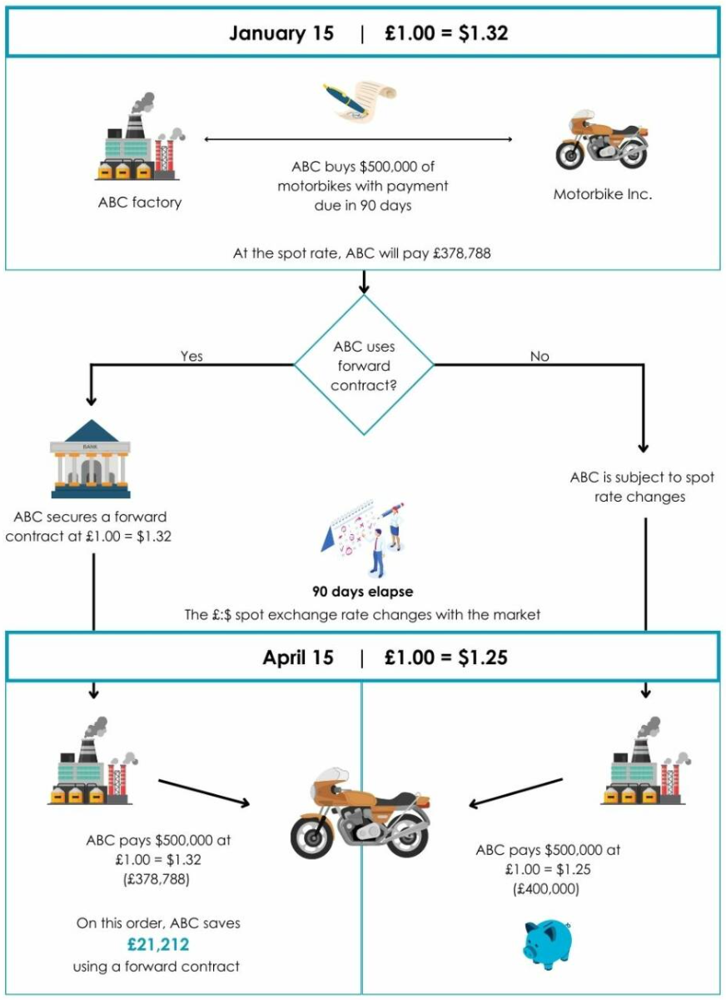
FX Forwards
Source: Trade Finance Global
Link
Lafarguette & Raboun (IMF STX)
FXI Theory & Practice
STI, 17 April 2023
28 / 79
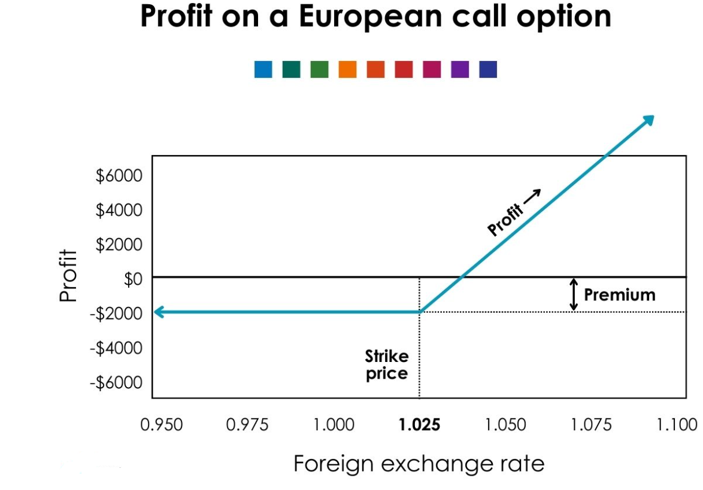
FX Call Options (Protection against Appreciation)
Source: Trade Finance Global
Link
Lafarguette & Raboun (IMF STX)
FXI Theory & Practice
STI, 17 April 2023
29 / 79
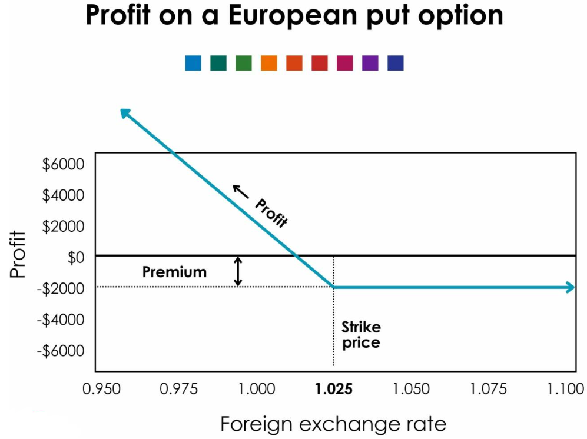
FX Put Options (Protection against Depreciation)
Source: Trade Finance Global
Link
Lafarguette & Raboun (IMF STX)
FXI Theory & Practice
STI, 17 April 2023
30 / 79
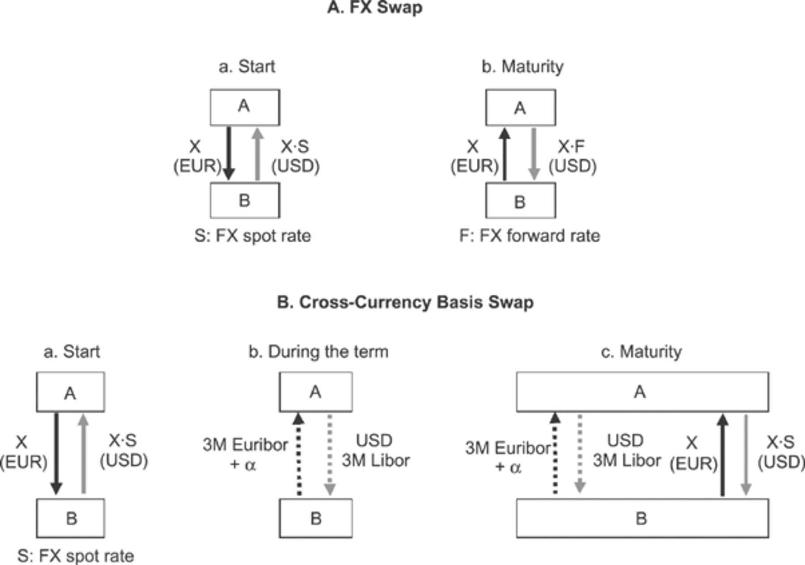
Forex Swaps and Cross-Currency Basis Swaps
Source: JFIPM 2008
Link
Lafarguette & Raboun (IMF STX)
FXI Theory & Practice
STI, 17 April 2023
31 / 79
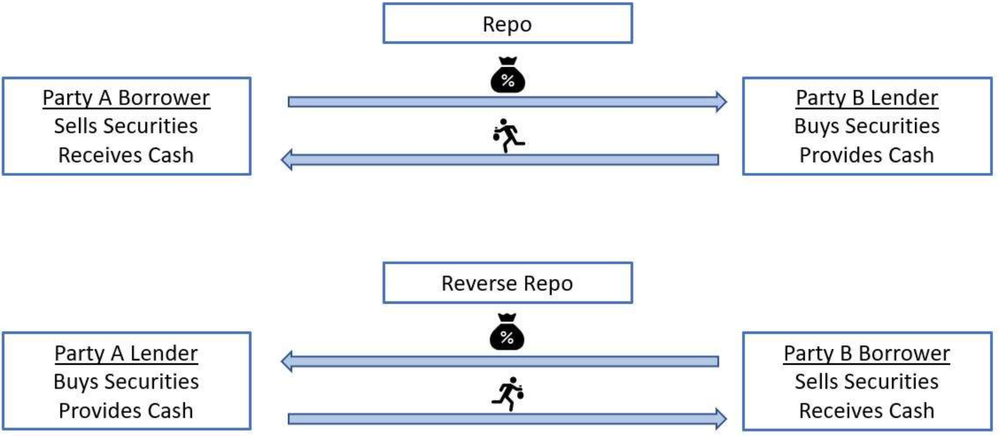
FX Repos and Reverse Repo
Source: Derivativelogic
Link
Lafarguette & Raboun (IMF STX)
FXI Theory & Practice
STI, 17 April 2023
32 / 79
Spot vs. Derivatives: Intertemporal Considerations
Spot FXI: provide immediate FX provision
Forward FXI: provide FX at a pre-defined future point in time
Option-based FXI: provide FX during a certain, pre-specified
period, in particular turbulent times
Repo and swap-based FXI: provide FX for the duration of the
repo or swap, providing a hedge against maturity mismatches in
FX
Lafarguette & Raboun (IMF STX)
FXI Theory & Practice
STI, 17 April 2023
33 / 79
Implementation Differences between AE and EME
AEs tend to intervene exclusively in the spot market
Many EME countries intervene in derivative markets
First mover: Bank of Spain sold put options on the peseta to fight
devaluation pressures in 1993
Bank of Thailand used forward market purchases to support the
baht in 1997
Bank of Mexico sold put options on the USD to accumulate USD
reserves in 1990s
Other Latin American countries in the 1990s: Chile, Brazil, Peru
More recently, a growing list of EMEs: Brazil, Colombia, India,
Indonesia, Mexico, South-Africa, Thailand
Lafarguette & Raboun (IMF STX)
FXI Theory & Practice
STI, 17 April 2023
34 / 79
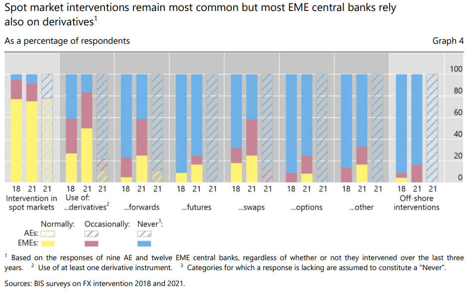
Survey of FXI Instruments used by Central Banks
Source: BIS 2021
Link
Lafarguette & Raboun (IMF STX)
FXI Theory & Practice
STI, 17 April 2023
35 / 79
Rule vs. Discretion
Often, central banks prefer to operate via un-disclosed,
discretionary interventions
Idea to "surprise the market"
No commitment of intervention, perceived control on FX reserves
level
On the contrary, some central banks use rule-based systems:
Indicates no explicit intention to target an exchange rate level
Aligned with the monetary objectives
Maximize signaling channel, help agents forming their expectations
Immune to political pressures
Depending on the set-up might give room to speculators
Lafarguette & Raboun (IMF STX)
FXI Theory & Practice
STI, 17 April 2023
36 / 79
Rule vs. Discretion
Countries that have implemented rules-based interventions:
Mexico, Chile and Columbia: rules-based programs of
pre-announced daily purchases/sales of FX
Czech Republic and Russia used to have "automatic interventions"
Evidence from the Czech National Bank
Link
"automated
interventions" suggest that rule-based interventions were more
effective in steering the FX rate than discretionary interventions
In general, empirical evidence suggest that the effect of
discretionary, "surprise" intervention fades very fast
Lafarguette & Raboun (IMF STX)
FXI Theory & Practice
STI, 17 April 2023
37 / 79
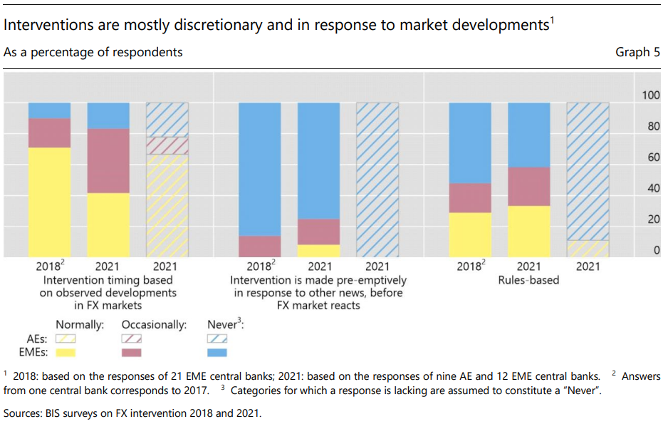
BIS Survey on Rule vs Discretion
Source: BIS 2021
Link
Lafarguette & Raboun (IMF STX)
FXI Theory & Practice
STI, 17 April 2023
38 / 79
Assessing Central Banks’ Rules/Discretion in Practice
Central banks often don’t follow a rigid rule: it is difficult to
quantify their objectives and rationales
Policies are often episodic: frequent in some periods and then
none in other periods
Operations largely "lean against the wind" to react against
deviations from target
Lafarguette & Raboun (IMF STX)
FXI Theory & Practice
STI, 17 April 2023
39 / 79
FX Intervention Size
To the best of my knowledge, there is no theory determining the
optimal amount
The general rule is to intervene infrequently, with relatively large
amounts (as share of daily market turnover)
Impact the market
Maximize signaling effect
Gain credibility
Yet, to decide on a specific amount, it is critical to:
Consider the level of foreign reserves, and the adequate reserves
level (e.g. ARA metric or any other metric)
Calibrate as percent of daily FX market turnover
Assess the liquidity conditions and the FX market impact
Lafarguette & Raboun (IMF STX)
FXI Theory & Practice
STI, 17 April 2023
40 / 79
Orders of Magnitude
The BIS has conducted a survey of central banks interventions in
2021 ( Link )
On average, cumulated FXI intervention during a day represent
between 15% and 20% of market turnover, with some central
banks exceeding 50%
Representing between 0.3% and 0.8% of the monthly FX reserves
For regular interveners, frequency of intervention during "normal
years" (not COVID) is around 10-15 days per year
But climbed up to 80 days in 2020 !
Lafarguette & Raboun (IMF STX)
FXI Theory & Practice
STI, 17 April 2023
41 / 79

BIS Survey on Size and Frequency
Source: BIS 2021
Link
Lafarguette & Raboun (IMF STX)
FXI Theory & Practice
STI, 17 April 2023
42 / 79
Targeted vs. Open Market Interventions
Systematically important banks may require targeted FX
provision under specific circumstances
Even if FX provision facilities are not "targeted", bank take-up is
unlikely to be uniform
Issues:
Potential market distortions and market discriminations among
institutions
Political pressures
Open-market more transparent and less distortive
Lafarguette & Raboun (IMF STX)
FXI Theory & Practice
STI, 17 April 2023
43 / 79
Communication and Transparency
Little consensus among central banks, in particular on ex-post
communication (data, amounts, etc.)
Signaling is an important transmission channel of foreign
exchange interventions and can only be achieved with
communication and transparency
The "surprise the market" effect can be detrimental, especially
when liquidity is scarce and risk high
No evidence in the literature that secret and unexpected
interventions are more efficient, after the initial first hours
On the contrary, unexpected interventions fade quite fast
Seem to impede anchoring FX market expectations and supporting
the credibility of the central bank
Lafarguette & Raboun (IMF STX)
FXI Theory & Practice
STI, 17 April 2023
44 / 79
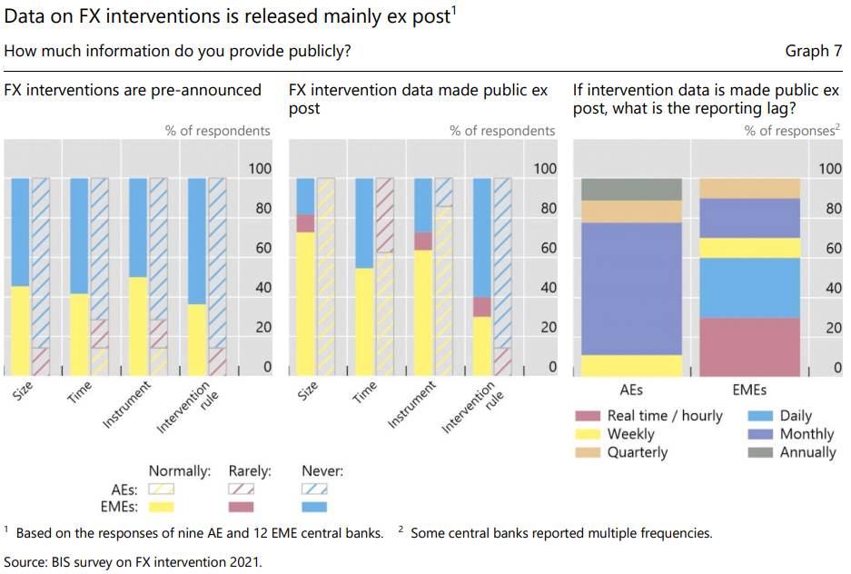
BIS Survey on Ex-Post Communication
Source: BIS 2021
Link
Lafarguette & Raboun (IMF STX)
FXI Theory & Practice
STI, 17 April 2023
45 / 79
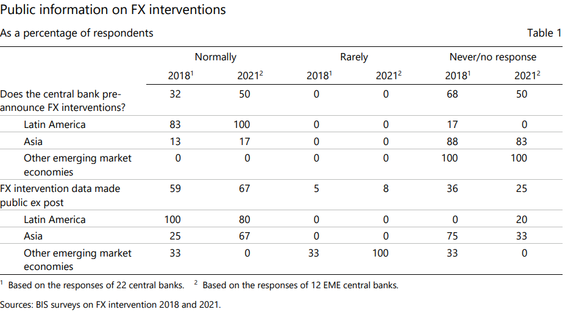
BIS Survey on Public Information
Source: BIS 2021
Link
Lafarguette & Raboun (IMF STX)
FXI Theory & Practice
STI, 17 April 2023
46 / 79
Publicly Available Intervention Data
Available via the FRED (Federal Reserve Bank of St Louis):
Australia (1983-2006)
Germany (1976-1995)
Italy (1988-1998)
Japan (1991-2022)
Mexico (1997-2011)
Switzerland (1975-2001)
Turkey (2002-2019)
United States (1973-2003)
Central bank websites:
Argentina
Chile
Georgia
Kyrgyz Republic
United Kingdom
Lafarguette & Raboun (IMF STX)
FXI Theory & Practice
STI, 17 April 2023
47 / 79
Technical Issues: Simultaneity
The decision to intervene is often not independent from
movements in exchange rate
Most likely to occur in reaction to unwanted exchange rate changes
The decision to intervene may also be part of a broader set of
policy actions (monetary and/or fiscal policy, capital controls),
potentially leading to an overestimation bias for intervention
Studies using high-frequency data (daily, intra-daily) maybe be
less subject to the simultaneity bias but can’t assess whether
intervention has lasting effects
Lafarguette & Raboun (IMF STX)
FXI Theory & Practice
STI, 17 April 2023
48 / 79
Criteria for Success
FXI should significantly influence either the relative price or the
volatility of the currency in the appropriate direction
How large? How persistent? What is the counterfactual
Initial approach: non-parametric test by grouping FXI into
"episodes" and test whether the exchange rate movements
before/after are consistent with the objectives (Dominguez and
Frankel 1993, Fatum and Hutchinson 2003)
Concern: timing and duration of intervetion episodes are likely to
be endogeneous
According to these (old) studies, interventions are generally effective
in moving exchange rate in the appropriate direction
Lafarguette & Raboun (IMF STX)
FXI Theory & Practice
STI, 17 April 2023
49 / 79
Recent Results (Fratzscher 2019, 33 countries
1995-2011)
1
60% success in the ability to influence the direction of the
exchange rate
Higher if interventions are large and are accompanied by oral
intervention
2
80% success in smoothing the path of the exchange rate
Reduction in exchange rate variation in the week after the
intervention vs the week before
3
80% success to stability the exchange rate in a narrow band
2% band, during the next two weeks
Lafarguette & Raboun (IMF STX)
FXI Theory & Practice
STI, 17 April 2023
50 / 79
Interesting Granular Studies
Intraday interventions studies (BIS 2013) for Chile, Colombia,
Mexico, Peru during the GFC
Regression discontinuity (Kuersteiner et al. 2018) on a
rule-based intervention Columbia
Regression: cut-off for triggering the rule is just met or just missed
Idea: variation near the cut-off is almost randomly generated
Counterfactual matching approach: construct a synthetic
group as counterfactual
Not appropriate for frequent intervention but useful at the event
level
Counterfactual uses data from other countries, with weights based
on the pre-announced co-movement with the currency of interest
Problem in the case of a global shock
Lafarguette & Raboun (IMF STX)
FXI Theory & Practice
STI, 17 April 2023
51 / 79
Profitability of Interventions
Friedman (1953): a successful central bank in stabilizing the
exchange rate should make a profit at the expense of speculators
Suggesting that unprofitable interventions are ineffective
Edison (1993): they show, however, that profitable interventions
may have no influence on exchange rates, suggesting flawed
Friedman criteria
Empirical evidence suggests that profits vary significantly
according to the sample periodm but generally, intervention is
profitable
Lafarguette & Raboun (IMF STX)
FXI Theory & Practice
STI, 17 April 2023
52 / 79
FX Interventions and Capital Flows Management
Capital flow management (CFM) may increase the efficacy of
sterilized FX interventions by reducing foreign and domestic asset
substituability
Firms in EME issue more and more foreign currency debt, while
EME sovereign debt is increasingly in local currency (with a larger
fraction held by foreigners). Therefore:
Currencies and domestic financing conditions are more exposed to
swings in capital flows
EME may need/want full access to all policy tools given these
vulnerabilities
Complementary or substitutes?
FXI is a more flexible tool
Lafarguette & Raboun (IMF STX)
FXI Theory & Practice
STI, 17 April 2023
53 / 79
Russian Central Bank Intervention
Unique type of automated intervention
Place limit orders on an electronic order book to set an upper
bound on the rouble price of a dollar
Effectively, Russia was implementing a crawling band to severely
limit the flexibility of the rouble
Empirical results
Link
at high frequency:
Russian interventions increased exchange rate volatility for the next
few minutes but lowered the degree of volatility over the day,
compared to non-intervention days
Case study suggests that countries with large reserves and
capital controls can implement a stabilizing crawling exchange
rate band using strategic limit orders in electronic currency
markets
Lafarguette & Raboun (IMF STX)
FXI Theory & Practice
STI, 17 April 2023
54 / 79
FX Intervention or Currency Manipulation?
IMF: The IMF Articles of Agreement prohibit countries from
manipulating their currency for the purpose of gaining unfair
trade advantage
US Treasury approach (Trade Facilitation and Enforcement
Act 2015). Currency manipulation criteria:
Bilateral trade surplus with the US is at least USD 20 bn
Current account surplus of at least 3 percent of GDP
One-sided intervention (net purchases of foreign currency)
conducted repeatedly and totaling at least 2 percent of GDP over a
12-month period
Countries on the "US Monitoring List" if they meet 2 of the 3
criteria: China, Germany, Japan, Korea, Switzerland, India (2018)
In practice, it is very difficult to assert whether a country is
manipulating its currency
Lafarguette & Raboun (IMF STX)
FXI Theory & Practice
STI, 17 April 2023
55 / 79
When is Exchange Rate Management Warranted?
Theory: free-floating exchange rate serves as global automatic
stabilizers, when markets function efficiently
Currencies weaken when countries face negative demand or supply
shocks, supporting competitiveness
If much of the world experience the negative shock, the
stabilization process is less clear-cut
No impact on exchange rate if all currencies move in the same
direction
Currency wars: when many countries try to depreciate their
exchange rate
Lafarguette & Raboun (IMF STX)
FXI Theory & Practice
STI, 17 April 2023
56 / 79
Global Capital Flows Shocks and Exchange Rate
Management
International capital flows can be disconnected with countries’
fundamentals and may warrant exchange rate management
Switzerland’s experience during the euro crisis is an example of
this dilemma
The Swiss franc appreciated as a safe heaven currency, completely
disconnected from Switzerland fundamentals
Massive negative effect on Swiss exporters, and the SNB had to
engage into interventions
Establishment of a floor against the Euro (1.20) ... that became
unsustainable when the ECB prepared for the QE
Lafarguette & Raboun (IMF STX)
FXI Theory & Practice
STI, 17 April 2023
57 / 79
Can a Country Manipulate its Currency over the
Long-Term?
If capital is freely mobile
Undervalued exchange rate boost exports -> overheat the economy
-> increases domestic prices
Bring the real exchange rate back to an equilibrium value consistent
with saving and investment
If capital flows are controlled
A central bank financing its FX reserves by issuing domestic
instruments can force the private sector to increase its net saving
Consequently, the domestic interest rate will rise, and it can deviate
from the world interest rate due to capital control
The real exchange rate will deviate from its past equilibrium
Change the balance of saving and investment in the country,
potentially weakening its fundamentals
Lafarguette & Raboun (IMF STX)
FXI Theory & Practice
STI, 17 April 2023
58 / 79
1
Conceptual Framework
Goals and Intermediate Objectives
Monetary Frameworks
Types of FX Interventions
Transmission Channels
2
Implementation
Instruments
Rule vs. Discretion
FXI Size
Communication
Intervention Effectiveness
FX Interventions and Exchange Rate Management
3
Practical Cases
Mexico
Brazil
Colombia
Lafarguette & Raboun (IMF STX)
FXI Theory & Practice
STI, 17 April 2023
59 / 79
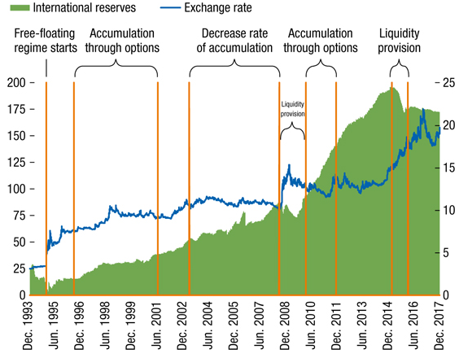
Mexico Path to Free Float Exchange Rate
Source: IMF
Link
Lafarguette & Raboun (IMF STX)
FXI Theory & Practice
STI, 17 April 2023
60 / 79
FX Interventions to Manage FX Reserves
USD remittances from the Federal Public Entities
Especially PEMEX, the national oil company
When the level of foreign reserves is deemed inadequate, the
central bank has resorted to rules-based approaches to buy/sell US
dollar from the market with preannounced auction mechanisms,
where timing and prices were known in advance
Buying USD via the sale of US dollar put options to the market
via monthly auctions (1996-2001 and 2010-2011) with two
requirements
The option strike price is the fix exchange rate determined by
the Bank of Mexico on the previous business day
The option can only be executed only when the peso exchange rate
of exercise has appreciated with respect to its 20-day moving
average (meaning buying when USD is cheap)
When the level of foreign reserves was deemed too high due to
sterilization costs: selling USD via spot auctions half of the
amount accumulated during the previous quarter
Lafarguette & Raboun (IMF STX)
FXI Theory & Practice
STI, 17 April 2023
61 / 79
FX Sterilized Interventions to Smooth Volatility
Interventions on the spot market via rules-based auctions
US dollar auctions with and without minimum bid price
With minimum bid-price, decided on previous business day +2%
(bid are only eligible if they are above this price, yet it is a multiple
price auction)
Without minimum bid-price and without triggering rule. The
auctions are interactive, the participants know the bids during the
auction and could improve their bid.
Auctions of USD-denominated credit lines offered to banks, which
they could on-lend to corporates (USD 3.2 billion in 2009)
The resources came from the swap line with the Fed, not from the
BAM reserves themselves. The BAM still takes only the
counterparty risk
Limit moral-hazard via an auction-based pricing mechanism,
revealing true banks’ risks ("no free lunch")
Direct USD sales (discretionary) where the tendered amount and
triggers are decided by the BAM FX commission
Including with institutions outside of the country (in 2017)
Lafarguette & Raboun (IMF STX)
FXI Theory & Practice
STI, 17 April 2023
62 / 79
Other FX Instruments
Foreign Exchange Hedge Auction Program via NDF
Auctions Settled in MXN
The BAM wants to sell foreign exchange hedges to participants,
without endangering its own FX reserves
Market participants bid for the forward exchange rate they need at
the maturity of the contract
At the end of contract: if the spot is higher than the assigned
forward price (depreciation), the commercial bank makes a profit
settled in pesos
All ND positions are rolled over unitl the BAM decides to stop them
Note that, even though the all transactions are settled in USD, the
central bank is short USD. Which is a potential cost (settled in
pesos)
Flexible credit line with the IMF to supplement current
international reserves
Mexico was one of the first three countries to receive an IMF FCL
in 2009 when the program was launched
Initially around USD 47 bn, then USD 90 bn in 2016
Lafarguette & Raboun (IMF STX)
FXI Theory & Practice
STI, 17 April 2023
63 / 79
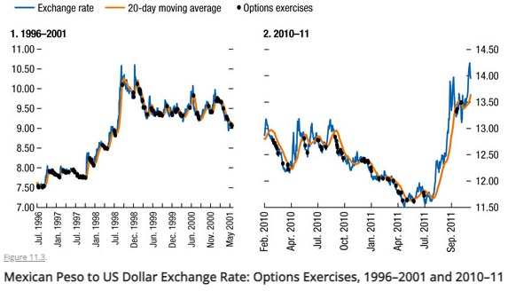
Mexico Put Options
Source: IMF
Link
Lafarguette & Raboun (IMF STX)
FXI Theory & Practice
STI, 17 April 2023
64 / 79
Effectiveness
The BAM interventions framework has been considered by
policymakers and the literature as efficient, and without FX target
in mind
Empirical evidence suggest that the central bank has been able to
contain extreme volatility episodes
Also helping to maintain the policy objective, which is to keep the
interbank funding rate at the monetary policy objective
Lafarguette & Raboun (IMF STX)
FXI Theory & Practice
STI, 17 April 2023
65 / 79
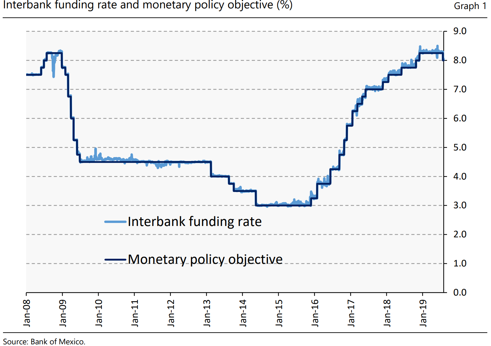
Mexico Interbank Rate
Source: Bank of Mexico and BIS
Link
Lafarguette & Raboun (IMF STX)
FXI Theory & Practice
STI, 17 April 2023
66 / 79
Brazil: During GFC
During the GFC, the Brazilian central bank used a combination of
different instruments to stabilize the BRL
Swaps
Spot market auctions
Repo market auctions
Trade finance loans
Forward market auctions
Kohlscheen and Andrade (JIMF 2014) find that the currency
swaps carried in 2011 Q2-2012 had a significant effect on the
BRL/USD
Lafarguette & Raboun (IMF STX)
FXI Theory & Practice
STI, 17 April 2023
67 / 79
Brazil (2013-2018)
The BCB implemented the largest ever intervention in the FX
derivatives market in August 2013
Initially to counter-act capital outflows and the BRL depreciation
during the "Taper Tantrum"
The open position of the BCB in these derivatives summed up to
7% of the Brazilian GDP (30% of the international
reserves) in the peak of the program in 2015
The intervention program was considered successful and other
EME have followed: Mexico (February 2017), Turkey (November
2017)
Lafarguette & Raboun (IMF STX)
FXI Theory & Practice
STI, 17 April 2023
68 / 79
Brazil 2013: Hedger-of-Last-Resort
Due to historical restrictions to buy US dollars in the Brazilian
sport market, the country’s FX derivative markets became larger
than the spot one.
Intervention program: daily sales of USD 500 million worth of
currency non-deliverables forwards
USD forwards settled in BRL, also known as BCB swaps,
developped by the BCB (the "swaps cambiais")
Traded in the local stock exchange ("B3")
Lafarguette & Raboun (IMF STX)
FXI Theory & Practice
STI, 17 April 2023
69 / 79
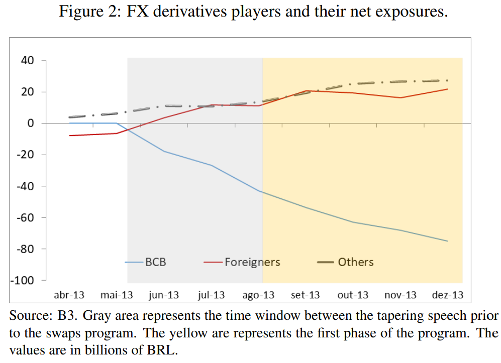
FX Derivatives Players and their Net Exposures
Source: Gonzalez, Khametshin, Peydro and Polo (2019)
Lafarguette & Raboun (IMF STX)
FXI Theory & Practice
STI, 17 April 2023
70 / 79
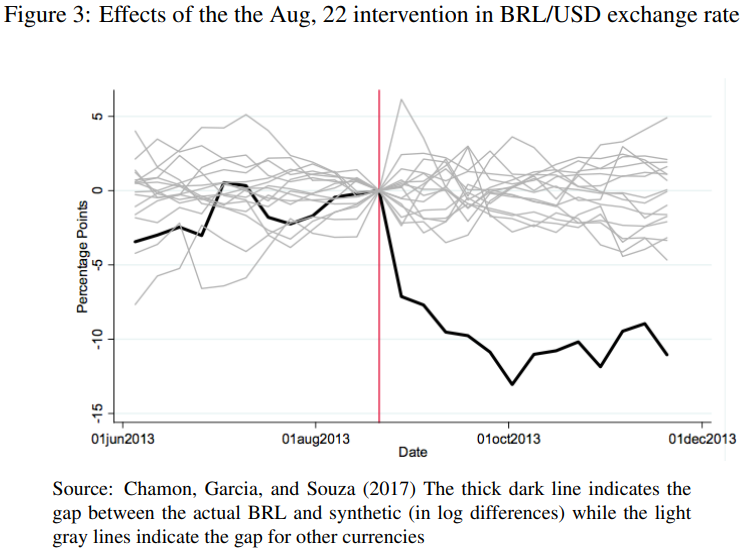
Effects of the August 22 2013 Intervention in the
BRL/USD exchange rate
Source: Gonzalez, Khametshin, Peydro and Polo (2019)
Lafarguette & Raboun (IMF STX)
FXI Theory & Practice
STI, 17 April 2023
71 / 79
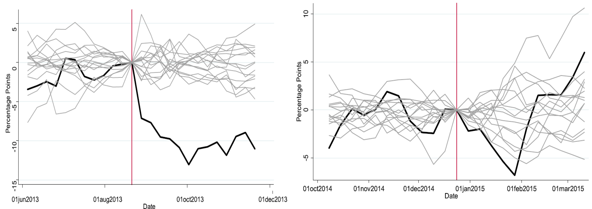
Yet the Effect has been Fading Out between 2013 and
2015
Source: Gonzalez, Khametshin, Peydro and Polo (2019)
Lafarguette & Raboun (IMF STX)
FXI Theory & Practice
STI, 17 April 2023
72 / 79
Colombia Call and Put Options to Hedge Volatility Risk
Objective: mitigate FX volatility, after the shift to a flexible
exchange rate regime in 1998/99 (used to be crawling bands).
"Offer to the market hedges against extreme circumstances"
Offer put (protection against depreciation) and call (protection
against appreciation) options
TRM: representative market Colombian peso/US dollar exchange
rate
Strike prices: +5% Higher (put) or -5% lower (call) than the 20-day
moving average of the TRM
Threshold takes into account a low probability of activation, due to
the +/- 5% limit
Amount fixed at USD 180 million then USD 200 million
Some discretion was applied:
When the Colombian peso was weak, the central bank deactivate
the put, because the central bank didn’t want to buy USD at this
price.
Added some discretion when high demand (threshold, etc.)
Lafarguette & Raboun (IMF STX)
FXI Theory & Practice
STI, 17 April 2023
73 / 79
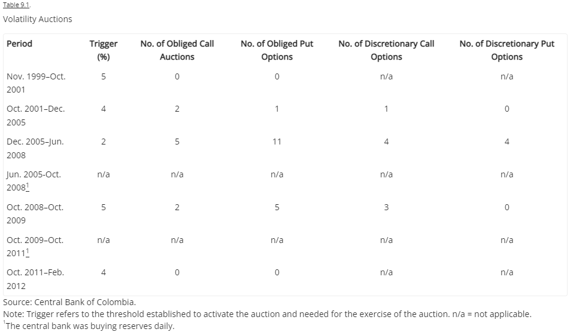
Colombian Central Bank Foreign Exchange
Interventions 1999-2017
Source: Cardozo (2019)
Lafarguette & Raboun (IMF STX)
FXI Theory & Practice
STI, 17 April 2023
74 / 79
Colombia: Put Options to Accumulate USD Reserves
How to accumulate FX reserves at the best price and limiting
market impact?
Following Mexico’s experience, the Colombian central bank
auctioned these options at the end of each month (1999-2002 and
2003-2008) to banks, financial corporations and the MoF
USD options with one-month maturity and a strike price
equal to the representative market Colombian peso/US
dollar exchange rate (TRM)
Agents can only exercise the option when the TRM was below the
20-day average
The central bank could then avoid buying US dollar when the
Colombian peso is weaker than the previous 20 days
Lafarguette & Raboun (IMF STX)
FXI Theory & Practice
STI, 17 April 2023
75 / 79
Colombia Put Options to Accumulate USD Reserves
Suitable approach to accumulate FX reserves while minimizing
market impact
Through these auctions, the central bank bought USD 3.4 billion
in 8 years
All 49 auctions were oversubscribed, with min/max amount of USD
30 million and USD 250 million
Lafarguette & Raboun (IMF STX)
FXI Theory & Practice
STI, 17 April 2023
76 / 79
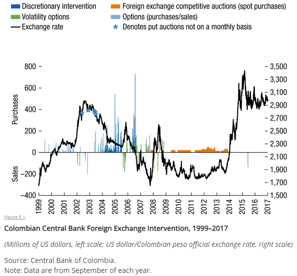
Colombian Central Bank Foreign Exchange
Interventions 1999-2017
Source: Cardozo (2019)
Lafarguette & Raboun (IMF STX)
FXI Theory & Practice
STI, 17 April 2023
77 / 79
Selling Reserves for Preserving Financial Stability
Colombia is an inflation targeter operating a flexible exchange rate
regime
Foreign interventions should therefore be motivated by financial
stability concerns
The operating procedure depends on the type of financial stability
threats
If financial agents suffer from closure in FX credit lines: the
central bank intervenes through FX swaps and acts as a liquidity
provider
FX swaps don’t transfer FX risks
If there is no private provision of FX hedge on the market, the
central bank steps in and provide USD non-deliverable
forwards
FX forwards do transfer FX risk
If the foreign reserves are enough, sell spot. If not, sell USD NDF
(settled in local currencies)
Lafarguette & Raboun (IMF STX)
FXI Theory & Practice
STI, 17 April 2023
78 / 79
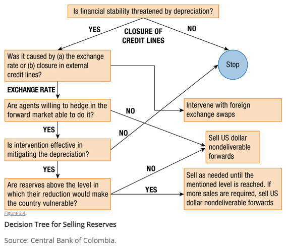
Decision Tree for Selling Reserves
Source: Central Bank of Colombia
Lafarguette & Raboun (IMF STX)
FXI Theory & Practice
STI, 17 April 2023
79 / 79
Document Outline